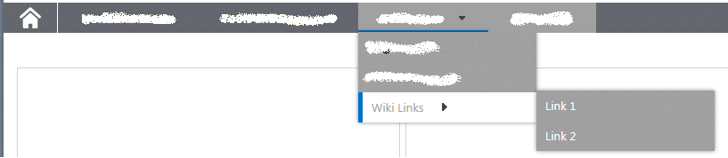

Introduction
This post is intended to show how to customize a SharePoint 2013 navigation menu with 3 levels using CSS.

Master Page
We’ve to add this code to our master page:
1
2
3
4
5
6
7
8
9
10
|
<div class="globalMenuNavigation">
<SharePoint:AjaxDelta ID="DeltaTopNavigation" BlockElement="true" CssClass="ms-displayInline ms-core-navigation ms-dialogHidden" runat="server">
<SharePoint:DelegateControl runat="server" ControlId="TopNavigationDataSource" Id="topNavigationDelegate">
<Template_Controls><asp:SiteMapDataSource ShowStartingNode="False" SiteMapProvider="SPNavigationProvider" id="topSiteMap" runat="server" StartingNodeUrl="sid:1002"/></Template_Controls>
</SharePoint:DelegateControl>
<SharePoint:AspMenu ID="TopNavigationMenu" Runat="server" EnableViewState="false" DataSourceID="topSiteMap" AccessKey="<%$Resources:wss,navigation_accesskey%>" UseSimpleRendering="true" UseSeparateCss="false" Orientation="Horizontal" StaticDisplayLevels="2" AdjustForShowStartingNode="true" MaximumDynamicDisplayLevels="2" SkipLinkText="" />
</SharePoint:AjaxDelta>
</div>
|
After server response this HTML code is returned:
1
2
3
4
5
6
7
8
9
10
11
12
13
14
15
16
17
18
19
20
21
| <div class="globalMenuNavigation">
<div id="DeltaTopNavigation" class="ms-displayInline ms-core-navigation ms-dialogHidden">
<div id="zz12_TopNavigationMenu" class=" noindex ms-core-listMenu-horizontalBox">
<span class="additional-background ms-navedit-flyoutArrow">
<span class="menu-item-text">
<a href="/">Link 1.1</a>
</span>
</span>
<span aria-haspopup="true" class="additional-background ms-navedit-flyoutArrow dynamic-children">
<span class="menu-item-text">
<a href="/">Link 1.2</a>
</span>
</span>
<span class="additional-background ms-navedit-flyoutArrow">
<span class="menu-item-text">
<a href="/team-sites/ito-team-site">Link 1.2.1</a>
</span>
</span>
</div>
</div>
</div>
|
Note: It’s always good to have this rendered code in order to see how to customize the CSS to achieve out goal.
Code
1
2
3
4
5
6
7
8
9
10
11
12
13
14
15
16
17
18
19
20
21
22
23
24
25
26
27
28
29
30
31
32
33
34
35
36
37
38
39
40
41
42
43
44
45
46
47
48
49
50
51
52
53
54
55
56
57
58
59
60
61
62
63
64
65
66
67
68
69
70
71
72
73
74
75
76
77
78
79
80
81
82
83
84
85
86
87
88
89
90
91
92
93
94
95
96
97
98
99
100
101
102
103
104
105
106
107
108
109
110
111
112
113
114
115
116
117
118
119
120
121
122
123
124
125
126
127
128
129
130
131
132
133
134
135
136
137
138
139
140
141
142
143
144
145
146
147
148
149
150
151
152
153
154
155
156
157
158
|
.globalMenuNavigation,
.ms-core-navigation,
.ms-core-listMenu-horizontalBox,
.ms-core-listMenu-horizontalBox ul,
.ms-core-listMenu-horizontalBox ul li,
.ms-core-listMenu-horizontalBox ul li a
{
margin: 0;
padding: 0;
border: 0;
list-style: none;
line-height: 1;
position: relative;
-webkit-box-sizing: border-box;
-moz-box-sizing: border-box;
box-sizing: border-box;
}
.globalMenuNavigation,
.ms-core-navigation,
.ms-core-listMenu-horizontalBox,
.ms-core-listMenu-horizontalBox > ul
{
height: 34px;
display:block;
}
.ms-core-listMenu-horizontalBox > ul > li,
.ms-core-listMenu-horizontalBox > ul > li > a
{
height: 34px;
vertical-align: middle;
}
.ms-core-listMenu-horizontalBox > .ms-core-listMenu-root > .ms-listMenu-editLink
{
display:none;
}
.ms-core-listMenu-horizontalBox ul, .ms-core-listMenu-horizontalBox li
{
display:block;
}
.ms-core-listMenu-horizontalBox li.static > .ms-core-listMenu-item
{
margin-right:0px !important;
}
.ms-core-listMenu-horizontalBox ul.ms-core-listMenu-root
{
position:relative;
z-index:10;
padding-left:0px;
}
.ms-core-listMenu-horizontalBox ul.ms-core-listMenu-root > li
{
font-weight:bold;
float:left;
position:relative;
padding:0px;
margin:0px;
padding-top: 10px;
padding-left: 25px;
padding-right: 25px;
padding-bottom: 0px;
z-index:10;
}
.ms-core-listMenu-horizontalBox ul.ms-core-listMenu-root > li.selected
{
background-color: #A1A1A1;
}
.ms-core-listMenu-horizontalBox ul.ms-core-listMenu-root li a,
.ms-core-listMenu-horizontalBox ul.ms-core-listMenu-root li a.selected
{
color: white;
}
.ms-core-listMenu-horizontalBox ul.ms-core-listMenu-root li a.parent
{
padding-right:25px;
position:relative;
}
.ms-core-listMenu-horizontalBox ul.ms-core-listMenu-root > li:hover
{
box-shadow: inset 0px -3px 0px rgba(0, 114, 198, 1);
background-color: #A1A1A1;
}
.ms-core-listMenu-horizontalBox ul.ms-core-listMenu-root > li:hover > a
{
text-decoration:none;
color:#FFF !important;
}
.ms-core-listMenu-horizontalBox ul.ms-core-listMenu-root li:hover ul
{
display: block;
}
.ms-core-listMenu-horizontalBox ul.ms-core-listMenu-root li:hover ul ul
{
display: none;
}
.ms-core-listMenu-horizontalBox ul.ms-core-listMenu-root ul
{
display:none;
width:200px !important;
position:absolute;
top:0;
margin-top:0px;
left:0px !important;
padding:0px;
list-style:none;
background: #A1A1A1;
background-image:url('../menu_bg.png');
}
.ms-core-listMenu-horizontalBox ul.ms-core-listMenu-root ul li
{
font-weight:normal;
height: 34px;
line-height: 34px;
vertical-align: middle;
padding-left: 10px;
padding-top: 10px;
}
.ms-core-listMenu-horizontalBox ul.ms-core-listMenu-root ul.dynamic li
{
color: white;
}
.ms-core-listMenu-horizontalBox ul.ms-core-listMenu-root ul li:hover
{
background:#FFF;
border-left:5px solid #0072C6;
}
.ms-core-listMenu-horizontalBox ul.ms-core-listMenu-root li ul li:hover > a
{
color:#A1A1A1;
}
.ms-core-listMenu-horizontalBox ul.ms-core-listMenu-root ul li ul
{
display:none;
left:100%;
top:0;
padding-left:0px;
margin:-2px 0 0 100%;
}
.ms-core-listMenu-horizontalBox ul.ms-core-listMenu-root li ul li:hover ul
{
display: block;
}
.ms-core-listMenu-horizontalBox ul.ms-core-listMenu-root ul li ul li a,
.ms-core-listMenu-horizontalBox ul.ms-core-listMenu-root ul li ul li a.selected
{
color: white;
}
|
Note we are hiding the Edit Links button